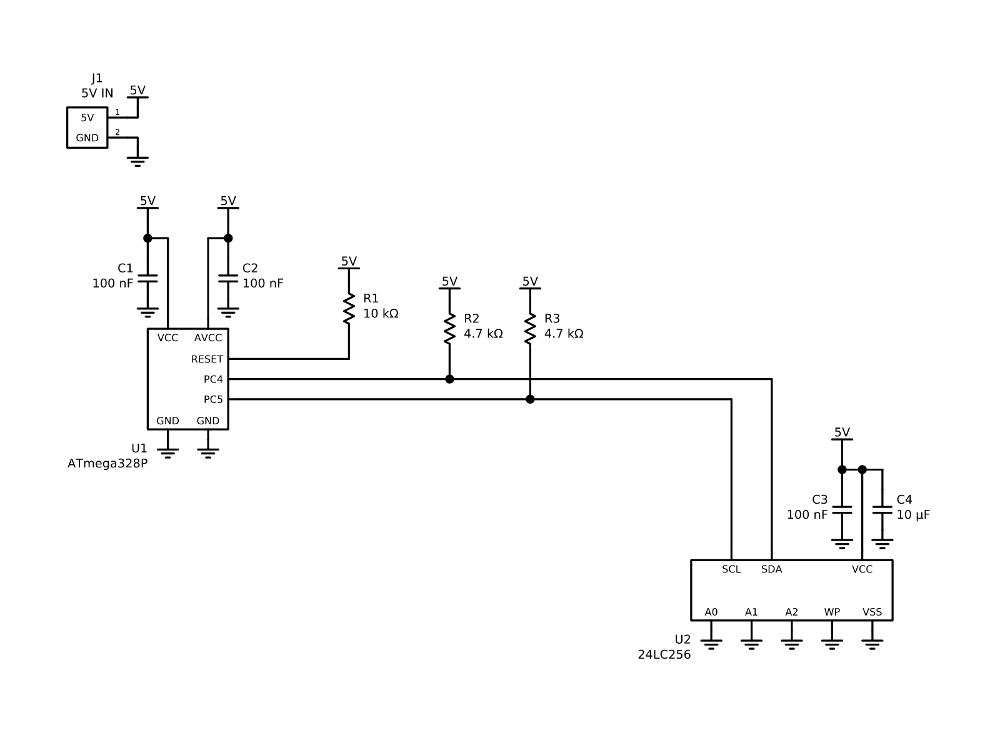
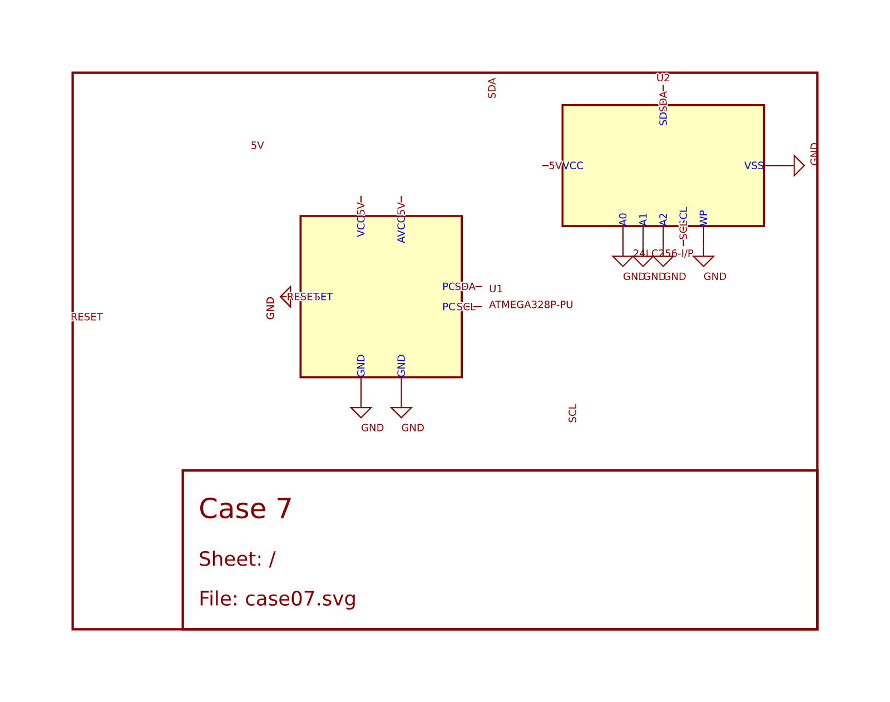
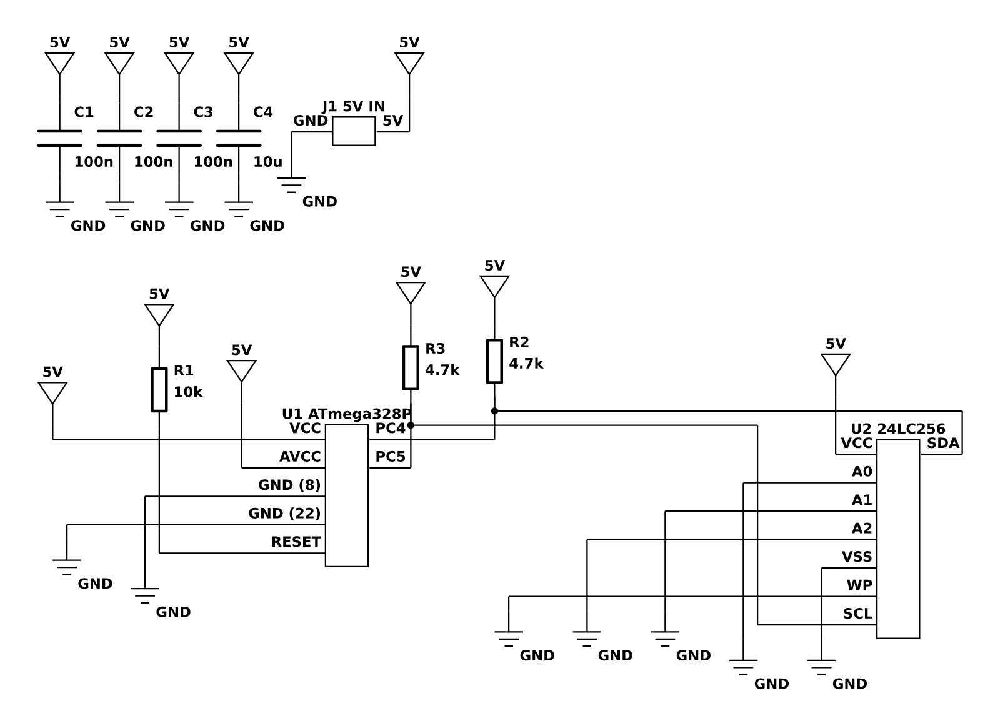
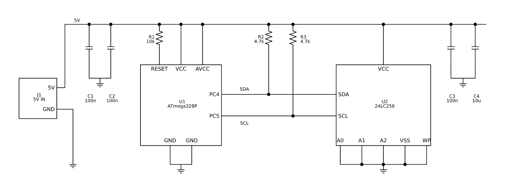

Case 1
LED and resistor
B1 9 V battery, R1 470, D1 red LED.
schem showcase
Six validation circuits, each drawn from the same netlist by our engine and by three open-source tools. This page shows the same grid as comparison.png and links every drawing to its original PNG.
npm run phase0 produced, rasterised with the same settings as the baselines (1600 px on the long side, same fonts).U1 ESP32 in netlistsvg case 6. The log records each of these.Click any drawing to open the original PNG at full size. Each drawing is scaled to fit its cell, so the scale differs between cells.
Case 1
B1 9 V battery, R1 470, D1 red LED.
Case 3
V1 1 V, V2 0.5 V, V3 0.2 V, R1-R3 10k, Rf 20k, RL 2.2k, U1 op-amp.
Case 4
B1 12 V, Q1-Q4 IRF540N, R1-R4 100, R5-R8 10k, M1 12 V motor, J1 drive header.
Case 5
U1 ESP32-DevKitC, U2 BME280, U3 SHT31, R1 and R2 4.7k pull-ups.
Case 6
U1 ESP32-DevKitC V4, K1 5 V relay, Q1 2N2222A, D1 1N4148, R1 1k, R2 10k, J1 load header.
Case 7
U1 ATmega328P, U2 24LC256, C1-C4, R1 10k, R2 and R3 4.7k, J1 5 V input.


Tool failure: the passives are stacked behind U1, so only the two ICs are visible. See the note below.


SKiDL's router failed on this circuit and the fallback placement stacked C1-C4, R1-R3 and J1 behind U1, so only the two ICs are visible. The connection check still passes, but the drawing does not show the circuit, so it is kept as the tool's honest output and marked as a tool failure rather than used as a fair comparison.
The differential pair is missing from this page because our own drawing of it is weak. The circuit, and the baselines for it, are still in the repository and in the log.